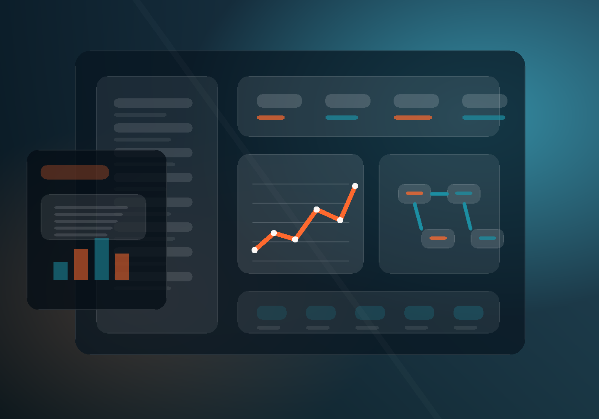

Diagnostic digital & plan d’action
Clarifier vos objectifs, vos blocages, vos outils actuels et les priorités à traiter.
MY BUSINESS LIFE
Que vous soyez particulier, indépendant, dirigeant, équipe terrain ou structure en croissance, nous vous aidons à transformer une idée, un blocage ou une organisation compliquée en solution simple, utile et durable.

Votre point de départ
L’objectif n’est pas de vendre une solution unique. C’est de comprendre votre contexte, puis de construire le chemin digital le plus simple pour atteindre le résultat attendu.
Structurer l’activité, gagner du temps, mieux piloter, vendre plus clairement.
02Créer une présence pro, simplifier les demandes clients, automatiser le suivi.
03Être accompagné pour un projet web, une idée digitale, un outil ou une démarche.
04Centraliser les données, fluidifier les process, réduire les tâches répétitives.
Services
Chaque service peut être activé seul ou combiné dans un plan d’action plus complet. Vous gardez une lecture claire de ce qui est utile, prioritaire et rentable.
Clarifier vos objectifs, vos blocages, vos outils actuels et les priorités à traiter.
Créer des pages lisibles, crédibles et pensées pour convertir sans complexité inutile.
Réduire la saisie, relier vos données, accélérer vos tâches répétitives.
Mieux suivre les demandes, les relances, les ventes, les interventions et les résultats.
Mettre en forme votre message pour être compris plus vite et choisi plus facilement.
Avancer avec un partenaire qui explique, ajuste et fait évoluer vos outils.
Méthode
Le digital devient utile quand il respecte votre réalité. Nous partons de vos usages, pas d’une solution imposée.
On identifie votre situation, vos irritants, vos objectifs et votre niveau d’urgence.
On transforme les idées dispersées en parcours, fonctionnalités et priorités.
On crée une solution propre, lisible, responsive et adaptée à vos usages.
On mesure, ajuste, automatise et améliore au rythme de vos besoins.
Orientation rapide
En quelques minutes, nous pouvons qualifier votre besoin : site, automatisation, logiciel, tunnel, visibilité, organisation ou accompagnement.
Ressource gratuite
Si votre quotidien dépend de trop d’outils, de fichiers, de doubles saisies ou de process manuels, commencez par ce guide court et concret.
10 pages pour poser un diagnostic simple et identifier les bons leviers.
Questions fréquentes
Non. MY BUSINESS LIFE peut accompagner un particulier, un porteur de projet, un indépendant, une association ou une entreprise déjà structurée.
Non. L’étude gratuite sert justement à traduire votre situation en besoin clair, puis en solution réaliste.
Oui, selon le contexte. On peut améliorer un site, connecter des outils, automatiser une partie du flux ou repartir sur une base plus saine.